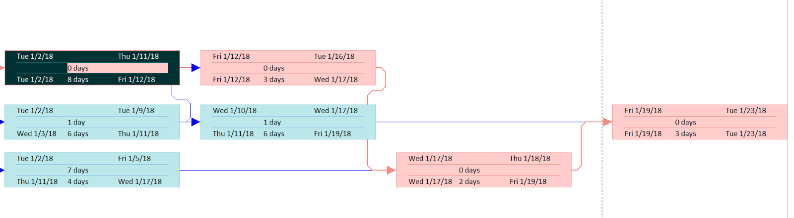

Microsoft 2016 Basics: PERT Diagram and Slack/Float¶
If you’re using Microsoft Project 2016 Professional, a network diagram is automatically set up for you once you enter Task Names, Duration, and Predecessors in the Gantt Chart view.
Note
MS Project uses the term Slack, not Float, which may confuse Project Management professionals, who are accustomed to the term Float, rather than Slack. In addition, Project uses the term Predecessor rather than Dependencies, another term often found in textbooks.
The default Network Diagram that MS Project Professional creates may not necessarily have the same appearance as PERT diagram examples taught in PMP, but the logic is the same and includes the duration and the task number (which is based on the sequence of tasks you list in the Gantt Chart). Moreover, you can edit the appearance of the Network Diagram to include any, or all details from the Gantt Chart view.

Viewing the PERT chart of a project¶
To view your Gantt chart’s corresponding PERT diagram, click View > Network Diagram.
Even if you didn’t select Critical Tasks from the Format ribbon in the Gantt Chart view, the Critical Path is highlighted in the Network Diagram as red.
Changing Work/Time duration scale¶
Although MS Project is used for large, complex projects, you can also use it to create simple Gantt diagrams for short-term tasks measured in hours and minutes. To do this, simply change the duration settings to Minutes or Hours before you begin creating a list of tasks.
To change duration input to minutes:
Click File > Options > Schedule.
Select Minutes for the setting Duration is entered in and Work is entered in.
Click OK.
Note
If you already have a task list with a specified duration, changing this setting won’t revert the Duration values to minutes, so change the Duration setting before creating your tasks.
Displaying Slack in the Gantt Chart and PERT diagram¶
You can display the Start/Finish/Total/Free Slack in both the Gantt Chart and PERT diagram.
To display Slack information in Gantt Chart view:
Click Task > Gantt Chart.
Click Add New Column, and then type or select Start Slack, Finish Slack, Total Slack, or Free Slack.
To display Slack information in the Network Diagram view:
Right-click any of the boxes, and then click Format Box.
Click More Templates > New.
Type a
Template Name. In this example, Slack Information is used.Click a cell from the Choose cell box, and then select values that you want to appear on your Network Diagram from the list.
In the following example, Late Start, Late Finish, Early Start, Early Finish, Duration and Total Slack are added to the cells.

Click OK. The new template is added to the list of the Data Templates box.
Click Close.
To apply the template, select the Network Diagram boxes. Right-click and then click Format Box.
Select the Data Template you created from the list, and then click OK.
Values on the Network Diagram boxes are updated. In the following example, Late Start, Late Finish, Early Start, Early Finish, Duration and Total Slack are added to the boxes.
